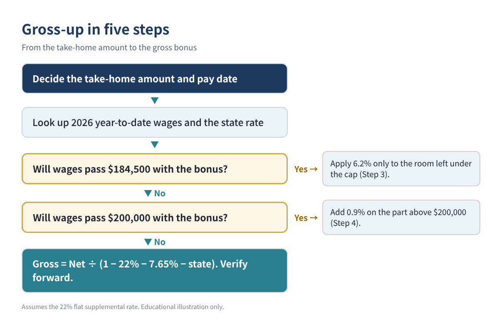
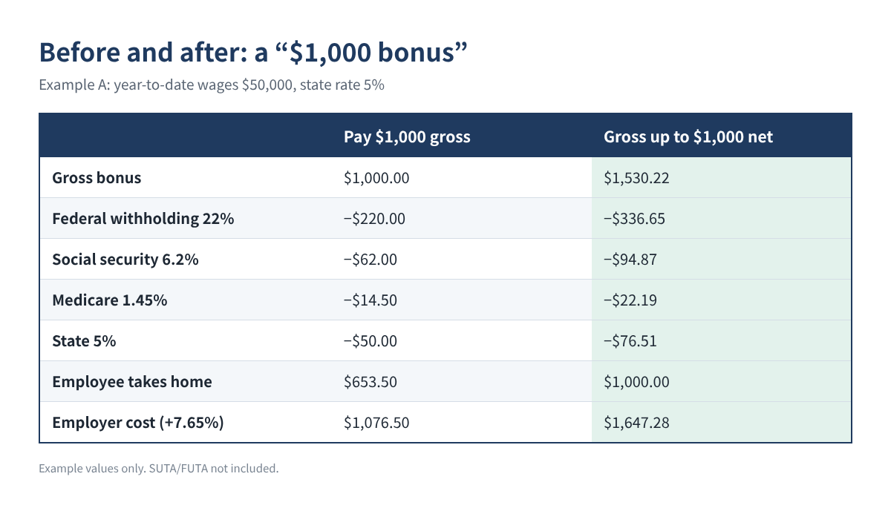
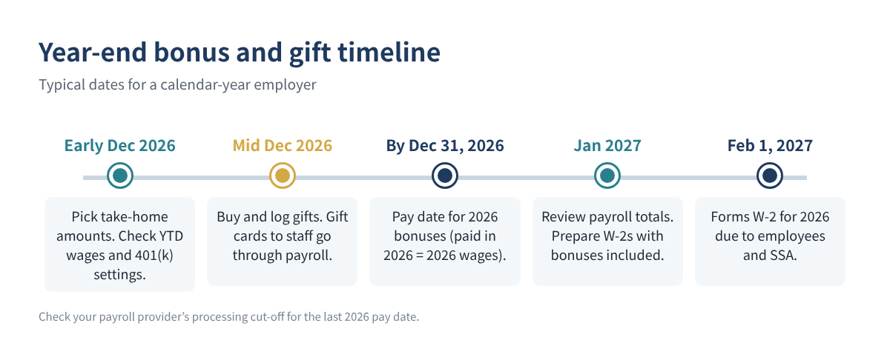

How to Gross Up a Holiday Bonus in 2026 So Employees Take Home the Exact Amount (Formulas and Examples)
↓ Get the free Excel + PDF kit for this article
You tell your team, "Everyone gets a $1,000 holiday bonus." Then payday comes, and each person sees about $650 hit their bank account. Federal withholding, social security, Medicare and state tax took the rest. The bonus that was supposed to feel generous feels like a mistake.
The fix is called a gross-up: you work backward from the take-home amount you want to give and pay a larger gross bonus so that, after withholding, the employee nets exactly what you promised. This guide shows the 2026 rates, the formula, three worked examples you can check, the true cost to the business, and how to keep a simple gift log for the small presents you also hand out in December.
Who this is for: small business owners and office managers who run payroll for a few employees and want to give a specific take-home bonus at year-end.
The 2026 rates that go into a bonus
A bonus is a "supplemental wage" under IRS rules. When it is paid separately from regular wages, most employers withhold federal income tax at the flat supplemental rate. The figures below are from IRS Publication 15 (2026) and Topic 751.
| 2026 item | Rate or limit | Who pays |
|---|---|---|
| Federal supplemental withholding | 22% flat (37% on supplemental wages over $1 million) | Employee (withheld) |
| Social security | 6.2% each, on wages up to $184,500 | Employee and employer |
| Medicare | 1.45% each, no wage limit | Employee and employer |
| Additional Medicare withholding | 0.9% on wages over $200,000 | Employee only |
| State income tax | Varies by state (0% to several %) | Employee (withheld) |
Table 1. 2026 withholding rates used in this article (IRS Pub. 15 and Topic 751).
Two notes. First, the flat 22% is the federal *withholding* rate; the employee's actual tax is settled on their return. Second, this method assumes you pay the bonus as a separate payment (or identify it separately) and use the flat rate. If your payroll adds the bonus to a regular paycheck and withholds as if it were all regular wages (the aggregate method), the result will differ.
The gross-up formula
In the simple case (the employee is under the social security wage base and under $200,000 of wages for the year), every withholding is a fixed percentage of the gross, so:
Gross bonus = Net bonus ÷ (1 − 22% − 6.2% − 1.45% − state rate)
In a spreadsheet, with the take-home amount in B2 and the state supplemental rate in B3 (for example 0.05 for 5%; use 0 if your state has no income tax):
B4 Gross bonus: =ROUND(B2 / (1 - 0.22 - 0.062 - 0.0145 - B3), 2) B5 Fed (22%): =ROUND(B4*0.22, 2) B6 Soc. security: =ROUND(B4*0.062, 2) B7 Medicare: =ROUND(B4*0.0145, 2) B8 State: =ROUND(B4*B3, 2) B9 Check net: =B4 - SUM(B5:B8)
B9 should equal your target (rounding can leave a cent or two; adjust the gross by a cent if needed). Check your own state's rules: some states have a flat supplemental withholding rate, some use other methods, and some cities add local tax.

Step-by-step with the two edge cases
Step 1. Decide the take-home amount and the pay date
A bonus is wages in the year it is paid. A bonus paid on January 2, 2027 is 2027 wages, even if it is "for" 2026.
Step 2. Look up year-to-date wages
Social security stops once the employee's 2026 wages reach $184,500. Additional Medicare withholding (0.9%) starts on wages above $200,000. Both depend on year-to-date wages before the bonus.
Step 3. Handle the social security cap
If year-to-date wages are close to $184,500, only the part of the bonus below the cap carries 6.2%. Let Y be year-to-date wages and R = 184500 − Y (the room left). If the gross will be larger than R:
Gross = (Net + 0.062 × R) ÷ (1 − 0.22 − 0.0145 − state rate)
Step 4. Handle the $200,000 Additional Medicare threshold
If the gross pushes wages over $200,000, add 0.9% on the part above $200,000. With Y already above $184,500 and below $200,000, and M = 200000 − Y:
Gross = (Net − 0.009 × M) ÷ (1 − 0.22 − 0.0145 − 0.009 − state rate)
Step 5. Verify by recomputing forward
Always calculate each withholding from your gross and subtract. If the result matches the promised take-home, you are done.
| Example (illustration) | Gross | Federal 22% | Soc. sec. | Medicare | State | Net |
|---|---|---|---|---|---|---|
| A. Net $1,000, YTD $50,000, state 5% | $1,530.22 | $336.65 | $94.87 | $22.19 | $76.51 | $1,000.00 |
| B. Net $5,000, YTD $182,000, state 0% | $6,734.16 | $1,481.52 | $155.00 | $97.65 | $0 | $5,000.00 |
| C. Net $10,000, YTD $195,000, state 0% | $13,159.29 | $2,895.04 | $0 | $264.24 | $0 | $10,000.00 |
Table 2. Three examples, verified forward. Example values only. In C, Medicare includes 0.9% on the $8,159.29 above $200,000.
Example A is the common case. Example B shows the social security cap: only $2,500 of room is left, so the gross is much lower than a straight formula would give. Example C crosses $200,000, so part of the bonus carries the extra 0.9% Medicare withholding.

What the bonus really costs the business
On top of the gross, the employer pays its own 6.2% social security (up to the wage base) and 1.45% Medicare. Federal and state unemployment taxes apply only if the employee has not yet reached those wage bases for the year (FUTA stops at $7,000 per employee). For Example A:
Gross bonus $1,530.22 Employer social security $94.87 Employer Medicare $22.19 Total cost (before SUTA) $1,647.28
So a "$1,000 bonus" really costs about $1,650. Budget for that before you announce the amount.
Watch for 401(k) and other deductions
If the employee's 401(k) election applies to bonuses, the deferral will come out of the bonus and lower the take-home. Either include it in your gross-up math or check with your payroll provider before the run.
Holiday gifts: keep a simple log
Many owners also give gifts in December. Two different rules apply.
- Gifts to employees. Cash, gift cards and gift certificates are wages, no matter how small, and must go through payroll. A non-cash holiday gift with a low value (a fruit basket, for example) can be a tax-free de minimis benefit.
- Gifts to clients and other business contacts. The business deduction is limited to $25 per recipient per year. Incidental costs such as engraving, packaging and shipping generally do not count toward the $25.
| Date | Recipient | Relationship | Item | Cost | Deductible |
|---|---|---|---|---|---|
| 12/10 | Client A (example) | Customer | Wine set | $60 | $25 |
| 12/12 | Vendor B (example) | Supplier | Cookie tin | $18 | $18 |
| 12/20 | Client A (example) | Customer | Calendar | $12 | $0 (limit used) |
Table 3. Business gift log with the $25-per-recipient rule. Example data only.
A log with five columns (date, recipient, business relationship, item, cost) plus a formula column is enough:
F Deductible: =MIN(E2, 25 - SUMIFS($F$1:F1, $B$1:B1, B2))
Put the cost of each gift in column E; the formula stops each recipient at $25 for the year.
Year-end timeline

Common mistakes
- Announcing a gross amount and expecting it to feel like take-home. Say clearly whether the number is "before taxes" or "in your pocket."
- Forgetting the employer's share. The real cost is the gross plus about 7.65%.
- Using the formula at the wage base. Employees near $184,500 or $200,000 need Steps 3 and 4.
- Handing out gift cards outside payroll. They are wages and belong on the W-2.
- Ignoring the state. A 0% state and a 6% state produce different gross amounts for the same take-home.
- Paying in January and calling it a 2026 bonus. It is 2027 wages.
FAQ
Is the 22% rate the employee's real tax rate?
No. It is a withholding rate. The employee's actual tax depends on their total income and filing status and is settled on their return.
Can I use the 22% flat rate for everyone?
The optional flat rate is available for supplemental wages when certain conditions are met (for example, income tax was withheld from regular wages). Supplemental wages over $1 million in a year must be withheld at 37%. Your payroll provider applies these rules.
Do I have to gross up?
No. A gross-up is a choice. Many employers announce a gross amount instead; the key is to be clear.
Does a $25 gift card for each employee count as a $25 business gift?
No. For employees, a gift card is taxable wages, so it goes through payroll. The $25 gift limit is for gifts to clients and other business contacts.
Quick checklist
- ☐ Take-home amount and pay date decided (paid in 2026 = 2026 wages)
- ☐ Year-to-date wages checked against $184,500 and $200,000
- ☐ State supplemental rate looked up
- ☐ Gross computed and verified forward
- ☐ Employer cost (gross + 7.65%) budgeted
- ☐ 401(k) election on bonuses checked
- ☐ Gift cards to employees run through payroll; client gifts logged at $25 each
You can download the ready-made Holiday Bonus Gross-Up Calculator 2026 (with a business gift log) for free in the Free kit download box below: the Excel workbook plus a PDF guide, no sign-up needed.
This article is for education only and is not tax, legal or payroll advice, and it does not guarantee any result. Withholding methods and state rules vary; confirm with your payroll provider or a qualified professional before you run payroll.
Free kit download
Tools to follow this article step by step. No sign-up needed.
- Excel workbook (.xlsx)Holiday_Bonus_Gross_Up_Calculator_2026_EN.xlsx · 43 KB
- Step-by-step guide (PDF)Year_End_Bonus_and_Gift_Checklist_2026_EN.pdf · 56 KB
Free to use for yourself and your own business; please do not resell or redistribute. General information, not tax, legal or accounting advice; check every figure against your own records.